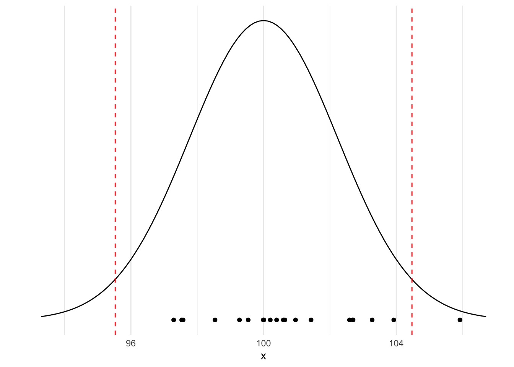
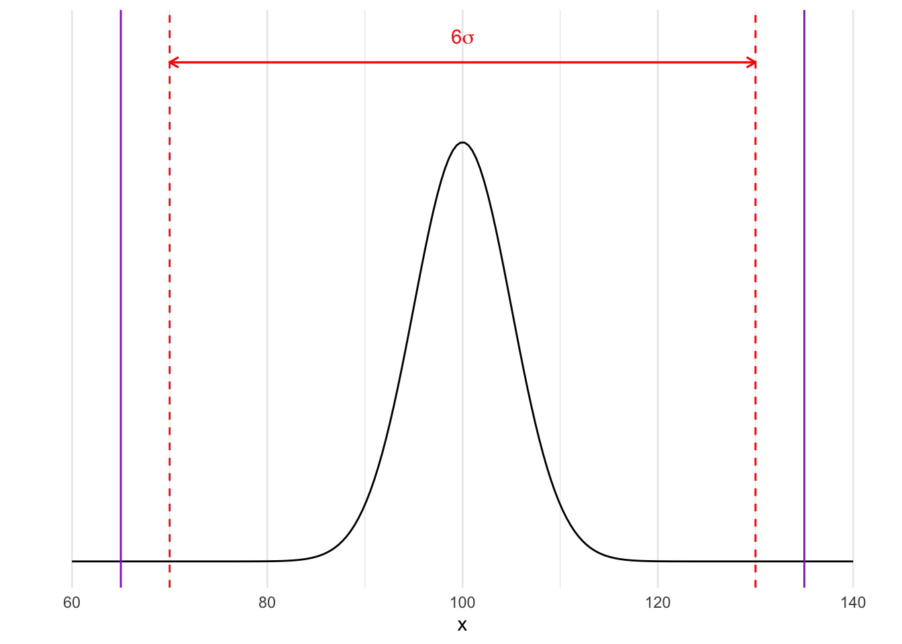

MSP
Introduction
La Maitrise Statistique des Procédés (MSP) ou Statistical Process Control (SPC) est une branche des statistiques qui s’intéresse au suivi dans le temps d’un processus (par exemple un procédé de fabrication). Historiquement les premières approches de la MSP ont été introduites par W. A. Shewhart dans les années 1920 alors qu’il travaillait dans les laboratoires BELL.
L’objectif est de pouvoir s’assurer que la production est stable avec un minimum de produits non conformes aux spécifications.
Le contrôle doit être simple à mettre en oeuvre et aussi permettre un suivi au plus près pour pouvoir détecter le plus tôt possible les déviations de production.
Package à installer
Télécharger et installer le package multiSPC_0.1.1 sur R.
But : vérifier la qualité de réalisation
Définir des indicateurs permettant de détecter des modifications inhabituelles au niveau :
du procédé de fabrication,
des instruments de mesure,
de la qualité des matières premières,
de la qualité des lots de produits finis.
Ces vérifications seront réalisées sur la base de prélèvements d’échantillon.
Fluctuation d’échantillons
Lorsque l’on prélève des échantillons dans une production même si les conditions opérationnelles sont strictement identiques on n’obtiendra pas les mêmes moyennes ni les mêmes écarts types.
Côté Math
Si les observations \(X_1,...,X_n\) sont prélevées indépendamment dans une population normale de moyenne \(\mu\) et d’écart type \(\sigma\) alors la moyenne de ces observations \[\bar X = \frac 1{n}\sum_{i=1}^nX_i \sim \mathcal N(\mu,\frac{\sigma}{\sqrt{n}}).\]
Pour illustrer ce résultat : Dans l’exemple suivant on prélève des échantillons de taille \(n=5\) dans une production normale dont la caractéristique moyenne est 100 et l’écart type 5.
Proportions de non-conformes
Compte tenu de la fluctuation d’échantillonage, on est obligé de se fixer un risque de détecter des faux positifs c’est à dire de rejeter des échantillons alors qu’ils sont conformes aux spcifications ou aux exigences du client.
Dans l’exemple précédent on voit que l’on rejetterai à tord un des échantillons !
La MSP dans l’amélioration continue
La qualité du produit n’est pas le simple respect d’une spécification.
L’objectif est représenté comme un processus de réduction de la dispersion des caractéristiques du produit.
Eviter la production de défectueux, c’est à dire d’avoir des produits qui ne répondent pas à des spécifications.
Méthode \(6\sigma\) :
Historiquement mise en place par Mikel Harry dans les années 80.
une méthode d’amélioration de la qualité qui repose sur la maîtrise statistique des procédés,
une méthode de management qui repose sur une organisation très encadrée de la conduite de projets.
Dans la boîte à outils 6 sigma on a : - de nombreux outils d’analyse du procédé, d’analyse statistique (MSP, plans d’expériences)
- un mode d’emploi sur la manière de les combiner
DMAIC (Define, Measure, Analyse, Improve, Control)
Les \(6\sigma\) en MSP
Toute production a une variabilité naturelle (mesurée par \(\sigma\) pour une loi normale).
\(\leadsto\) Il faut que cette variabilité naturelle reste dans des limites de variations admissibles autour d’une valeur cible.
\(\leadsto\) La moyenne de la production doit être proche de la valeur cible.
On revient à une production distribuée selon \(\mathcal N(100,5)\) alors \(6\sigma=30\) donc si on a une cible de 100 et des limites de spécifications de 65 et 135 alors le procédé de fabrication est sous-contrôle :

% de Faux positifs avec la règle des \(6\sigma\)
Si on considère que l’échantillon est conforme lorsque sa moyenne appartient à l’intervalle \([\mu-3\frac{\sigma}{\sqrt{n}},\mu+3\frac{\sigma}{\sqrt{n}}]\) alors on aura 0.3 % d’échantillons déclarés à tord non conformes (faux positifs).